12.31.2007 16:58
Converting FrameMaker files to something I can use?
Back when I was at NASA Ames and CMU in the 90's, we used FrameMaker
to write a lot of out documents. In cleaning house, I've come back
across some of these files and I'd like to get them converted to pdf
or text. Anybody have a good suggestion? I tried fm2html aka
frame2html and it is pretty only and crusty. Worse, it seems to be
trying to call fmbatch from /usr/frame4/bin/, which makes me think
this does not work with framemaker installed. With a little hacking,
I get this error:
./fm2html -d AGU_97.fm fm2html: Input File: AGU_97.fm fm2html: Executing "fm2mif /Users/schwehr/Desktop/Frame2html-0.8.9a/AGU_97.fm" fm2html: mif2html: File "/Users/schwehr/Desktop/Frame2html-0.8.9a/AGU_97.fm.mif" does not exist ... exiting at ./fm2html line 226.My FrameMaker files start with this line:
<MakerFile 5.0Y>I may just break down and use strings plus a text editor to reconstruct the most important couple documents.
12.31.2007 07:30
Icebreaker that can break ice sideways?
New Ship Breaks New Grounds, And Old Ice [sciencedaily]
... Aurora Borealis will be the first ever international ship, the brainchild of the European Science Federation, the Alfred Wegener Institute for Polar and Maritime Research in Germany and the Germany Federal Ministry of Research and Education. Russia has announced that it will be a partner in launching this state-of-the-art research vessel, but other European nations may soon join the project. But a European ship represents a metaphorical voyage into unknown waters, the ESF Science Policy Conference learned. ...
12.30.2007 12:52
Open Courseware
I am definitely a proponent of open course type projects. The CEP
Blog had a post that reminded me about the MIT project which is one of
the largest and earliest projects: OpenCourseWare:
Get Smart for Complex Event Processing!
I try to follow a similar model by putting all of my lectures up on the web with my Classes page. Especially to me is my first university course for credit that I did last semester with Colin Ware as a part of his regular Interactive Data Visualization: 2007 Vis Course. In that course I tought how to create visualizations using Google Earth and KML.
Interesting links (mostly MIT):
I try to follow a similar model by putting all of my lectures up on the web with my Classes page. Especially to me is my first university course for credit that I did last semester with Colin Ware as a part of his regular Interactive Data Visualization: 2007 Vis Course. In that course I tought how to create visualizations using Google Earth and KML.
Interesting links (mostly MIT):
- Open Corseware Consortium
- 6.824 Distributed Computer Systems Engineering Spring 2006
- 12.759 Marine Chemistry Seminar Spring 2006
- 12.110 Sedimentary Geology Spring 2007
- 2.611 / 2.612 Marine Power and Propulsion Fall 2006
- 1.264J / ESD.264J Database, Internet, and Systems Integration Technologies Fall 2006
- Stanford Open Coarseware - Bummer that there is nothing for the Earth Sciences department and only two classes in computer science
- Stanford on iTunes U - More classes than the Standord Open Course Ware
12.29.2007 16:03
Thinking about multicast reliable type protocols for AIS
Warning: This is me thinking through a problem where I haven't heard all the requirements and assumptions.
Way back in 1997, I wrote a multicast semi-reliable transmission protocol for the CMU rover to send back images from the Atacama desert to multiple locations around the United States. Back then, the data rate for these images for realtime telepresent driving was close to the limits of our satellite communications links and trying to drive multiple TCP/IP connections would have been a disaster. I started working on a paper about the algorithm back then, but got distracted by moving to CMU. So I was lame and never wrote the paper. I am now wishing I had taken the time to write the paper.
Why am I talking about this now, 10 years after the fact? Comments going within the RTCM SC121 working group on AIS Binary Messaging have brought up similar issues to that original work. We are talking about zone/area management messages that let the user know that something is up with a region of a water way. Reading through the message, I realized that part of the group wants this message to be an address binary message that requires the addressed vessel to respond with an acknowledgement. That could be serious trouble when a new message or updated message needs to go out and be acknowledged. If there are hundreds of vessels in the waterway, that will use a substantial chunk of bandwidth. That's two messages for each vessel and this is likely a 2 or more slot message for the outgoing.
Here is a quick back of the envelop calculation without checking my facts. Assume 200 ships and a 2 slot message with a one slot acknowledgement. Then assume that some operation within the port requires 3 separate zones (e.g. concentric increasing security/caution: heightened awareness, exclude some vessels, and exclude all vessels. That means a minimum of (200*2 + 100)*3 or 1500 slots of traffic. At the available data rates that is 1/3 of a second assuming no packet loss. Meanwhile, vessels will be trying to fit in the normal AIS traffic load. If there are more than one zone in each message, things get a little better, but this is still a big network traffic swarm. Then think of a moving zone that has to be updated every N (e.g. N=30) seconds as a LNG tanker moves through the harbor.
That kind of network traffic on 802.11 or other higher speed data links is not really a big deal, but for the AIS VDL rates of 2*9600bps, it is a serious issue. If AIS class B takes off, there will be many more AIS contacts.
I am only beginning to think through the problem requirements and issues at this point. This really needs some use cases to figure out what is really needed. Here are some starting points as I try to drop back into the world of managing network traffic.
- http://www.faqs.org/rfcs/rfc3170.html Request for Comments: 3170, IP Multicast Applications: Challenges and Solutions, See section 5.4 Reliable Data Delivery
- http://inrg.cse.ucsc.edu/katia/publications.html [Obraczka] K. Obraczka "Multicast Transport Mechanisms: A Survey and Taxonomy", IEEE Communications Magazine, Vol. 36 No. 1, January 1998.
- http://tools.ietf.org/html/rfc3208, Request for Comments: 3208, PGM Reliable Transport Protocol Specification
- http://www.ietf.org/internet-drafts/draft-ietf-rmt-pi-norm-revised-05.txt, NACK-Oriented Reliable Multicast (NORM) Protocol
I was thinking about a timed circular notice message (timed_circular_notice.html), but it is not addressed. I was thinking that if there is a detection of non-compliance from a vessel, that USCG software running with the basestation would then create an addressed safety text message informing the vessel and possibly alerting the local USCG watch standers that they need to contact the vessel via VHF voice radio.
Here is what my concept of the message looks like:
| Name | NumberOfBits | ArrayLength | Type | Units | Description |
|---|---|---|---|---|---|
| MessageID | 6 | uint | AIS message number. Must be 8 | ||
| RepeatIndicator | 2 | uint | Indicated how many times a message has been repeated 0: default 3: do not repeat any more |
||
| UserID | 30 | uint | Unique ship identification number (MMSI) | ||
| Spare | 2 | uint | Reserved for definition by a regional authority. | ||
| dac | 10 | uint | Designated Area Code - 366 for the United States | ||
| fid | 6 | uint | Functional IDentifier - 63 | ||
| month | 4 | uint | Start time of most recent notice UTC month | ||
| day | 5 | uint | Start time of most recent notice UTC day of the month 1..31 | ||
| hour | 5 | uint | Start time of most recent notice UTC hours 0..23 | ||
| min | 6 | uint | Start time of most recent notice UTC minutes | ||
| longitude | 28 | decimal | degrees | Center of the area/zone East West location | |
| latitude | 27 | decimal | degrees | Center of the area/zone North South location | |
| timetoexpire | 15 | uint | Minutes | Minutes from the start time until the notice expires. Max is aprox 23 days 0: No detection or notice not active in region 32767: Will not expire until another message has been received to replace the message for that location |
|
| radius | 15 | uint | m | Distance from center of detection zone (lat/lon above) | |
| areatype | 7 | uint | What does this circular area represent 0: Right whale acoustic detection 1: Restricted Area 2: Prohibited Area (no unauthorized entry) 4: Diving operations 5: Underwater obstruction 6: Fishing nets 7: Oil in water 9: Towing prohibited 10: Anchorage area (large vessels) 11: Anchorage area (small vessels) 12: Anchorage area (general) 13: Anchorage area (deep water) 14: Anchorage area (tanker) 15: Anchorage area (24h max) 16: Anchorage area (explosives) 17: Sea-plane landing area 18: Anchorage area (sea planes) 20: Anchoring prohibited 21: Fishing prohibitedx 23: Actively dumping explosives 24: Actively dumping 30: Firing danger area 31: Military area, entry prohibited 32: Mine-laying practice area 33: Submarine transit and excercise area 34: Mine field 61: Fast ice 62: Sea ice 63: Logs 65: Dreding area 66: Cargo transhipment area 67: Incineration area 70: SAR - Region of search (what SAR keys should there be?) 71: SAR - Man Overboard 111: LNG security zone |
12.28.2007 14:00
Mac OSX hints - mount_smbfs
For me, there is an important hint today on macosxhints.com:
Mount
Windows shares on proper paths in OS X
1. Mount the server the normal way (Command-K in Finder). 2. Check Remember Password option when authenticating. 3. Unmount the drive in the Finder -- very important! 4. Make a directory in Terminal with the sever and share name: mkdir -p /SERVER/share. 5. Mount the server with the command mount_smbfs //`whoami`@SERVER/share/ /SERVER/share. NOTE: if your short Unix username does not match your Windows server login, make it match. If it requires a domain, things like NNN\;bray are perfectly acceptable.I will likely setup some alias for my day to day work. I try to avoid windows shares as much as possible, but sometimes, I just do not have a choice. I always forget what the other smb commands are. I still wish for an AFS server at my current institution, but that is not going to happen.
12.27.2007 11:29
Many links - cosco busan and other marine topics
Survey
Vessel in New York harbor [tugster]
NTSB Marine Accident Bulletins and Reports
A tunnel for ships [gcaptain]
Ship handling videos [gcaptain]
Three crashes this month [boston.com]
Report says inexperienced navigator was on watch at time of Alaska ship's grounding AP article from Juneau, Alaska.
Maritime navigation and radiocommunication equipment and systems - Digital interfaces - Part 2: Single talker and multiple listeners, high-speed transmission - IEC 61162-2 Ed. 1.0
NTSB Marine Accident Bulletins and Reports
A tunnel for ships [gcaptain]
Ship handling videos [gcaptain]
Three crashes this month [boston.com]
The barge that stuck a railroad bridge on the North Shore early yesterday and disrupted train service for thousands of commuters has had three collisions in that stretch of water this month, according to transit officials. . At 6:30 the night before the crash, the barge bumped into the bridge between Beverly and Salem but did not cause any damage, said Daniel A. Grabauskas, general manager of the Massachusetts Bay Transportation Authority. On Dec. 5, the same barge hit a nearby pier. ...
Report says inexperienced navigator was on watch at time of Alaska ship's grounding AP article from Juneau, Alaska.
... The National Transportation Safety Board released a preliminary report Friday on the May 14 accident involving the riverboat-style Empress of the North about 25 miles southwest of Juneau. The ship, which was on the second day of a seven-day cruise, hit the submerged portion of a charted rock, then drifted a few miles from the shoal. .
Maritime navigation and radiocommunication equipment and systems - Digital interfaces - Part 2: Single talker and multiple listeners, high-speed transmission - IEC 61162-2 Ed. 1.0
12.26.2007 22:20
Robots on slashdot - heathkit and oil rigs
Heathkit reincarnates the hero robot [deviceguru.com]
and
Robots Taking Over The Job On Offshore Oil Drilling Platforms [sciencedaily.com]
There has been lots of talk about automation on oil platforms in the last year or two from a range of different companies, not just this group.
and
Robots Taking Over The Job On Offshore Oil Drilling Platforms [sciencedaily.com]
There has been lots of talk about automation on oil platforms in the last year or two from a range of different companies, not just this group.
12.26.2007 21:58
NAIS Increment 2 RFP released
I am sure all the people who are proposing to the NAIS Increment 2
already know that the RFP has been released. If you don't know, the
link is here:
http://www.naisproject.net/NAIS_External/NAISdiscussion/rfp2/index.asp
And the actual RFP (but with out attachments or DIDs - what is a DID?) is here:
RFP.pdf (262 pages)
The proposals are due in March. Best of luck to all who submit.
On page 244 / L-25 are some of the engineering details...
I have not written a proposal to a Federal RFP in over 10 years and never for something this size. Quite an insight into how the government works. There are strange things in there. Why does the RFP need to specify that the submission CD need to be virus free? I think that should leave that out and if someone submits an infected CD, they are of course not going to be accepted. Also, I found the DID's and they are Data Item Description forms. They are really ugly scans of an OMB form. Why are these not PDF forms?
http://www.naisproject.net/NAIS_External/NAISdiscussion/rfp2/index.asp
And the actual RFP (but with out attachments or DIDs - what is a DID?) is here:
RFP.pdf (262 pages)
The proposals are due in March. Best of luck to all who submit.
On page 244 / L-25 are some of the engineering details...
L.7.2. SECTION 1: SYSTEM CAPABILITY. L.7.2.1. Provide a thorough and complete description of the proposed solution with narrative provided for each component of the proposed system, with statements to describe how the proposed NAIS meets or beneficially exceeds the requirements in the PSPEC. The Offeror shall provide a conceptual design. At a minimum, the design shall include: L.7.2.1.1. The NAIS topology, identifying system components and the constituent services in a manner consistent with the components presented in the PSPEC; and, application architecture with software components which should build and add greater specificity to the proposed topology and the Services Oriented Architecture (SOA) described in the PSPEC. ...I did a quick skim and have some minor commentary:
I have not written a proposal to a Federal RFP in over 10 years and never for something this size. Quite an insight into how the government works. There are strange things in there. Why does the RFP need to specify that the submission CD need to be virus free? I think that should leave that out and if someone submits an infected CD, they are of course not going to be accepted. Also, I found the DID's and they are Data Item Description forms. They are really ugly scans of an OMB form. Why are these not PDF forms?
12.24.2007 16:43
European RIS working group and AIS XML
I finally sat down and read "Notices to Skippers for Inland Navigation"
version 1.2.1. This document specifies an XML message to transfer
lock, weather (met/hydro), and few other types of notices. It does
not talk about how to send this data via AIS. Also, the geometry
specified in the XML does not reference any existing encoding formats.
It uses dd mm.mmmm [NSWE] lat/long. Why not use a more standard
geographic coordinate format? I was reading this to think about
implications for AIS, but I don't think it really has any implications
for AIS. Perhaps AIS messages could be used to populate parts of a
report. The document references this website quite a bit:
http://www.risexpertgroups.org/
I found a copy of the document on the web, but this is much longer than the 19 page version I was given. It looks to have the XML schema description embedded. http://www.ccr-zkr.org/Files/ris/snk121_e.pdf
http://www.risexpertgroups.org/
I found a copy of the document on the web, but this is much longer than the 19 page version I was given. It looks to have the XML schema description embedded. http://www.ccr-zkr.org/Files/ris/snk121_e.pdf
12.23.2007 13:52
Command line way to put your mac to sleep
Sometimes you need a way to tell a mac to go to sleep. Mac OSX hints
just had a little example for 10.5 machines that will not autosleep:
10.5:
A python script to work around a sleep issue
At the heart of that python script is an os.system call to do this:
At the heart of that python script is an os.system call to do this:
/usr/bin/osascript -e 'tell app "Finder" to sleep'And another interesting 10.5 hint for iChat that sounds interesting, but I tend to use Adium. 10.5: Enable Data Detectors in iChat
defaults write com.apple.iChat EnableDataDetectors 1
12.23.2007 11:56
Wii head tracking
Head Tracking for Desktop VR Displays using the Wii Remote
Using the infrared camera in the Wii remote and a head mounted sensor bar (two IR LEDs), you can accurately track the location of your head and render view dependent images on the screen. This effectively transforms your display into a portal to a virtual environment. The display properly reacts to head and body movement as if it were a real window creating a realistic illusion of depth and space.
12.23.2007 11:42
Older posters now online
It's that end of the year cleanup time. I have to submit reports and
am about to upgrade a laptop. In the process, I ran into my old
posters. Please note that I prefer people to cite the published
papers over the posters. I have also cleaned up the endnote and
bibtex files for my publications. It is still far from perfect, but
it is definitely much better. I've blended in the posters that had
been separate. If you see something that I missed in this list,
please let me know. Also, if you have any idea what happens to NASA
Ames contractor reports, I would really like to know if they end up
somewhere accessible to the public.
my publications
my publications
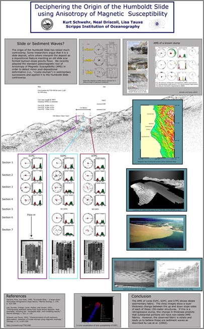
12.21.2007 17:33
pygooglechart info file for fink
I haven't done anything more than the example graph at this point, but
it works for me.
The graphs look nice and clean. Not overly fleximble, but definitely nice. Too bad you can't ask for an svg or pdf instead of just png.
% fink install wget imagemagick
% wget http://vislab-ccom.unh.edu/~schwehr/software/fink/pygooglechart-py.info
% fink install pygooglechart-py25
% ipython
from pygooglechart import SimpleLineChart, Axis
chart = SimpleLineChart(200, 125)
data = [ 1, 5, 30, 10, 25 ]
chart.add_data(data)
chart.set_axis_range(Axis.LEFT, 0, 10)
chart.download('hello.png')
print chart.get_url()
quit()
% display hello.png
The graphs look nice and clean. Not overly fleximble, but definitely nice. Too bad you can't ask for an svg or pdf instead of just png.
12.21.2007 16:27
Army starts using Macs
As the end of the year comes, there are a zillion articles comparing
computer security. I work in an office where 6 of us out of 75 people
use macs as their primary machines. We have one person who is
primarily linux, and the rest are Windows XP users. Every now and
again, a windows user will tell me, "The only reason you don't have to
deal virus and trojan issues is not that many people use Macs." I
have to remind them that Mac OS 9 and older which were horribly
riddled with nasties all the time. I'd have to say that Linux has
been the easiest for me to work with in terms of security, but I use a
lot of tools not available on linux. My ubuntu remote boxes work like
a champ, but I'll stick with my Mac laptop. I've had 0 of those kinds
of problems with Mac and Linux to date and with the linux boxes, my
uptimes are as good as the power source, but I tend to reboot machines
every few months to pick up kernel updates.
Now if the Verizon wireless driver would stop crashing my macs, all would be well.
Thinking Different, Apples For The Army
Now if the Verizon wireless driver would stop crashing my macs, all would be well.
Thinking Different, Apples For The Army
... Wallington, a division chief in the Army's office of enterprise information systems, says the military is quietly working to integrate Macintosh computers into its systems to make them harder to hack. That's because fewer attacks have been designed to infiltrate Mac computers, and adding more Macs to the military's computer mix makes it tougher to destabilize a group of military computers with a single attack, Wallington says. ... Military procurement has long been driven by cost and availability of additional software--two measures where Macintosh computers have typically come up short against Windows-based PCs. Then there have been subtle but important barriers: For instance, Macintosh computers have long been incompatible with a security keycard-reading system known as Common Access Cards system, or CAC, which is heavily used by the military. ...I know I am going to have to do some serious relearning with Windows when I get on my mac with vmware. I might also try OpenSolaris just to see what the Solaris world looks like. The last version of Solaris I used was 2.8 (aka solaris
12.20.2007 15:35
Microsoft's disaster response solution
Virtual Earth & JEPRS for Disaster Recovery [Virtual Earth for Government blog]
... To address this problem in the wake of the recent fires in Southern California, Microsoft partner Infusion Development worked with the County of San Diego to identify its requirements for a Disaster Assessment and Collaboration Portal (DACP). The portal is a customized deployment of their Joint Emergency Planning & Response System (JPRS) that leverages the Microsoft Virtual Earth mapping platform and Microsoft Sharepoint, allowing users to visualize and collaborate around a crisis event (readers of this blog should already be familiar with JEPRS). Also integrated into the solution is the IS Consulting MapDotNet Server .Net GIS platform, serving up the Virtual Earth map tiles, performing the geocoding and allowing layering of GIS data. ...http://www.sdcountydisasterrecovery.org/DACP/default.aspx
12.20.2007 10:06
Coverage of AGU Virtual Globes
Frank Taylor over at the Google Earth Blog is covering the Virual
Globes presentations at AGU last week.
AGU Fall Meeting - Day 1 Highlights
AGU Fall Meeting - Day 2 Highlights
Frank writes about my work with the NOAA Stellwagen Bank on his day two summary. I have an image of my poster online here:
AGU Fall Meeting - Day 1 Highlights
AGU Fall Meeting - Day 2 Highlights
Frank writes about my work with the NOAA Stellwagen Bank on his day two summary. I have an image of my poster online here:

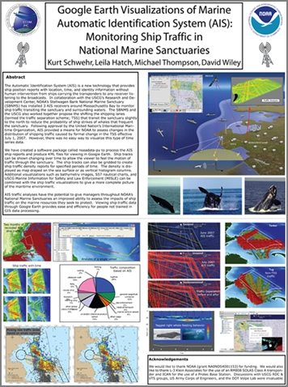
12.19.2007 21:25
Caribbean/Cuban shrimp
Finally, I am getting around to posting this...
Here is a rouch estimate of my recipe for Caribbean/Cuban shrimp. If you use 151, I am not responsible for any damage that may occur.
Here is a rouch estimate of my recipe for Caribbean/Cuban shrimp. If you use 151, I am not responsible for any damage that may occur.
- Start saffron rice from a packet as this takes about 20 minutes
- Begin with a little olive oil in skillet
- Add some cashews, red onions, and a clove of garlic
- Brown the cashews just slightly
- Add spices... tumeric, crushed red pepper, curry, etc. Might want to try a bit of ginger, white pepper and what ever else might work
- Add a frozen banana still in the peel. Cut the short way in the middle
- Add 1 mango that is ripe to the point the skin is starting to wrinkle. Remove the skin and pit before putting it in
- You might want to skip this step: Add a small amount of rum, about 1 shot, but do it right after putting the banana and mango in so as not to get any flames. Do NOT use 151. I tried it and thankfully the flames didn't get anything
- Give it 2 or 3 minutes on high
- Add 1/2 lbs of uncooked, peeled shrimp (40 cnt is a reasonable size)
- Cook on high until the shrimp are good and pink
- Turn off heat and remove banana peel
- Put rice on a plate and pore shrimp and mango over rice
- Top with 1/2 teaspoon of rum
12.19.2007 20:33
ROV book
Interesting sounding book...
The ROV manual : a user guide to observation-class remotely operated vehicles / Robert D. Christ and Robert L. Wernli Sr Amsterdam ; Boston ; London : Butterworth-Heinemann, 2007
12.19.2007 20:24
IHR paper is out - AIS binary messages
Looks like my last paper for 2007 is out. Just got a look at it
today. My picture didn't make it into the final pub, so Lee suggested
I photoshop myself back in. Other than that, this is a straight scan
and Acrobat pro assembly of images. Sorry, no electronic text of this
one and I have not yet done the appendix. This is fairly similar to
what we did for U.S. Hydro 2007. I just got another AIS XML reference
today, so expect more blogging about AIS and XML in the next couple
days.
A note to readers: There has been some confusion about what I am proposing. This is a way define the message content. XML is not sent over VHF radio.
[PDF] Schwehr, K., Alexander, L., Encoding AIS Binary Messages in XML Format for Providing Hydrographic-related Information, International Hydrographic Rev iew, 8:2, pp 37-57, 2007.
A note to readers: There has been some confusion about what I am proposing. This is a way define the message content. XML is not sent over VHF radio.
[PDF] Schwehr, K., Alexander, L., Encoding AIS Binary Messages in XML Format for Providing Hydrographic-related Information, International Hydrographic Rev iew, 8:2, pp 37-57, 2007.
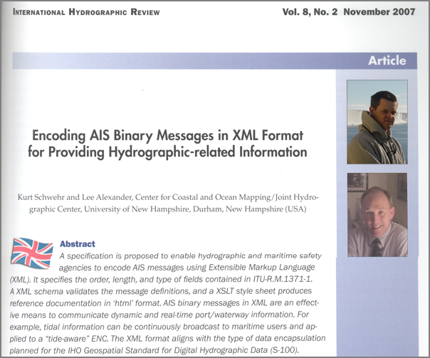
12.19.2007 17:50
Opensource rocket
I was just thinking about how open source might fit into the
government procurment world and I got home to see this article.
NASA
Will Tinker With Open-Source Rocket for Return to Moon ... go
behind the scenes of NASA's new Moon spacecraft, and here for an
astronaut's take on how to survive the new lunar base.
The "brains" of the Ares I rocket that will send four astronauts back to the moon sometime in the next 12 years will be built by Boeing, NASA announced today, but the specifications will be open-source and non-proprietary, so that other companies can bid on future contracts. The avionics unit will provide guidance, navigation and control for the launch rocket, which will carry the Orion crew vehicle into Earth orbit.
12.19.2007 09:08
Mac updates for me soon
I now have in my hands Mac OSX 10.5, VMware Fusion, and XPpro SP2.
Hopefully in the next week I will have this all installed and happy.
It will be strange to have windows available again. I plan on getting
Arc installed on windows too. I will probably be applying to be a
beta tester of Arc 9.3 so that I can try integrating directly with my
PostGIS databases. I hear rumors that a beta may be available soon
for Arc 9.3.
12.18.2007 19:44
Complex Event Processing in Distributed Systems
Complex
Event Processing in Distributed Systems. Lots of papers. Way
more than I have time to read. In reading about CEP today, I ran
across this nicely worded paragraph.
The Need for Reference Material [Todd Biske]
And as an aside, I am not that interested in neural networks for finding these patterns. I know they work and I even won an essay contest writing out them, but I am really interested in rule based systems where I can clearly describe what kinds of events I am using for triggering. A neural network based AIS monitoring system would be interesting, but I'll leave that for someone else.
The Need for Reference Material [Todd Biske]
My opinion is that reference material is absolutely necessary, if nothing else but to prevent the organization from tribal operations. If none of the standards and guidelines ever get written down, and decisions are solely based on tribal knowlege, the organization can quickly break down into the haves and the have-nots. If you're part of the tribe, you have the knowledge. If you're not, all you can do is make your best guess until you have to show up to tribal council and get lambasted. Trying to gain the knowledge from the outside is a very difficult process.Graphic and highly amusing. Even more amusing, down at the bottom, he writes:
If you have an organization with lots of VB6 and COBOL developers, they may need lots of reference material on web applications.
And as an aside, I am not that interested in neural networks for finding these patterns. I know they work and I even won an essay contest writing out them, but I am really interested in rule based systems where I can clearly describe what kinds of events I am using for triggering. A neural network based AIS monitoring system would be interesting, but I'll leave that for someone else.
12.18.2007 19:35
NOAA AUV workshop
I can't seem to find this online, but sources outside of NOAA/CCOM/JHC
sent me a PDF from the NOAA AUV Roadmap Workshop. I have to share a
small portion.
NOAA Ocean Service Office of Coast Survey:
- Hydrographic AUV Project: Develop technical expertise, define functional and technical requirements, and develop standard operating procedures to transition AUV technology into NOAA's operational hydrographic survey fleet.
- Baseline Port Survey Project: Incorporate AUVs into port security surveys to: facilitate rapid and flexible response; protect survey personnel by providing greater standoff during high risk surveys.
- Incorporate multi-beam sonar into AUV.
- Develop harbor tracking system for AUVs.
- 4D AUV mission planning, monitoring and play back software.
- Adaptive AUV Control software. Anyone have a link to a public posting of this workshop? I found a link to an older AUV workshop: http://nauticalcharts.noaa.gov/ocs/auv/auvmeeting.htm
On a related note, there was another workshop this last summer: AUVSA: Autonomous Underwater Vehicles (AUVs) for Scientific Applications, A conference to Promote Dialog Between AUV Developers, Engineers and Science Users.
12.18.2007 19:17
Fish experiment 1 a semi-failure
For an upcoming event, I am planning to bring a fish dish. I am
fairly comfortable with shellfish, but I'm definitely not as
comfortable with regular fish. Yes, I know I owe a few people a
posting of my Cuban shrimp recipe. Based on my fish cooking
experience, I've decided to enter into experiment mode. I figured I'd
start with something somewhat familiar. Back in 1998, ACD did probably
the best bit of cooked fish I have ever had. He did up a tuna with
caramelised onions that was unbelievable.
I tried to do something similar. I did up red onions in a lemon infused olive oil. Then I coated a tuna steak with wasabi powder and sesame seeds. I did that up on medium high heat for about 3-4 minutes per side. I used more than a half teaspoon of wasabi powder. It was good, don't get me wrong. But it was nothing special. My IM remote reviewing panel has suggested that I do more wasabi powder or better yet switch to fresh wasabi paste.
Hmmm... what to try next?
BTW, aspell in emacs thinks that wasabi is spelled "Wahhabi". I don't think I agree.
I tried to do something similar. I did up red onions in a lemon infused olive oil. Then I coated a tuna steak with wasabi powder and sesame seeds. I did that up on medium high heat for about 3-4 minutes per side. I used more than a half teaspoon of wasabi powder. It was good, don't get me wrong. But it was nothing special. My IM remote reviewing panel has suggested that I do more wasabi powder or better yet switch to fresh wasabi paste.
Hmmm... what to try next?
BTW, aspell in emacs thinks that wasabi is spelled "Wahhabi". I don't think I agree.
12.18.2007 15:38
US Holidays for iCal
Maybe you already know about this, but iCal on the mac does not
include holidays. Val sent me a link to US Holidays:
http://homepage.mac.com/ical/.calendars/US32Holidays.icsIn iCal, just go to Calendar->Subscribe and add the above link.
12.18.2007 13:17
NH Adobe User Group
Briana just pointed me to the NH Adobe User
Group.
second Tuesday of every month from 1:30 to 3:30. Our meetings are free and open to all.
12.17.2007 11:49
ais_build_sqlite3 switches db interface and adds class B messages
I've spent a little time updating the code that builds a SQLite
database from AIS messages. I've switched to using the sqlite3 module
that comes with python 2.5. I also added support for loading in AIS
messages 18 ('B') and 19 ('C') that are the two class B messages for
position and position and shipdata respectively.
% cat ais.log | ais_normalize.py > ais.log.norm % ais_build_sqlite3.py -C ais.log.norm Messages found: 1: 565 3: 305 4: 37 5: 300 8: 160 10: 7 11: 4 15: 69 17: 2 18: 22 20: 16 24: 16 26: 1 27: 3 28: 1 29: 3 30: 2 31: 1 56: 1 Messages processed: 1: 565 3: 305 4: 37 5: 300 18: 22 % sqlite3 ais.db3 '.tables' b_pos_and_shipdata_broken positionb bsreport shipdata positionNow, time to take a look at the data.
% sqlite3 ais.db3 'SELECT longitude,latitude FROM positionb' | tr '|' '\t' -122.68733 47.92291 -122.687306667 47.9229166667 -122.687318333 47.9229233333 -122.687316667 47.92293 -122.687326667 47.9229283333 -122.68731 47.922925 -122.687316667 47.9229333333 -122.687308333 47.9229333333 -122.687316667 47.9229383333 -171.388931667 -21.4328733333 -122.68733 47.9229366667 -122.687318333 47.9229316667 -122.687315 47.9229383333 -122.687318333 47.92293 -122.687325 47.9229366667 -122.687313333 47.9229283333 -122.687321667 47.9229283333 -122.687301667 47.9229383333 -122.687303333 47.9229516667 -122.687296667 47.92294 -122.687286667 47.9229283333 -122.687293333 47.92294The above mostly makes sense, but what is up with that highlighted packet?
12.17.2007 07:57
Bristle cone pines
Flying across Nevada reminded me of something from back in 1993. We
were told that bristle cone pines live only above a certain altitude
(which I can't remember or look up while on a plane). However, Pilar
and I noticed that one of the shale units in the Great Basin National
Park consistantly had bristle cone pines way below that altitude.
This first flight of the morning is on a plane that is only a week old, so hopefully there are clean windows for pictures. Some random Nevada pictures from this morning:
This first flight of the morning is on a plane that is only a week old, so hopefully there are clean windows for pictures. Some random Nevada pictures from this morning:
12.17.2007 05:59
dnsstuff - inspecting domain names
I just checked out my domain with dnsstuff. It came out mostly
okay. Seems like an easy way to check up on machines.
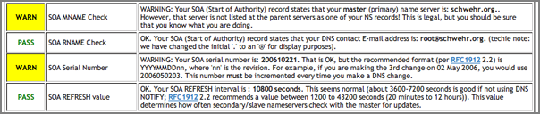
12.16.2007 12:47
django book
I have yet to get a chance to really play with any of the python web
frameworks. They seem pretty powerful. Maybe it is time to play a
little with django now that they are an online and print book.
Django Book v 1.0
Django Book v 1.0
12.16.2007 09:27
ESP/CEP in python?
Is there an Event Stream Processing (ESP) / Complex Event Processing (CEP) system out there in python? I'm looking for something just to get a feel for how well this stuff works.
I was looking at coral8, but they have only windows, linux, and solaris versions. I don't need performance now, but I need something that will let me see what ESP/CEP can get me for researching the even streams that I have. I've been reading more about these things and it is time for some hands on. Not that I have any free time, but this looks like a technique that I would be using on a daily basis if it works for me.
I do have a copy of vmware+xp waiting for me at the office, so I could just load it up in that, but native python would just me more relaxing to work with.
12.15.2007 07:44
Port of New Hampshire security measures
Port of New Hampshire advancing and increasing security measures
... Thanks to a $1.2 million security grant issued last year by the Department of Defense, the port will soon have some much needed security upgrades, which include a sonar detection system, a fully functional robot that is capable of traveling the floor of the Piscataqua, a patrol boat capable of various uses, a new dock that will cater to the Fire Department and an added boat launch that will provide immediate access to the water in case of an emergency. ...
12.14.2007 20:01
AGU 2007 is done
AGU 2007 is over. I talked to many people who I had not seen in ages
and did not get to talk to many others that I had hoped to. The
conference is a totally overwhelming experience (as usual).
Thanks so much to all those who came by my poster on Thursday in the GeoBrowsers section. I think the session was a huge success. I was exhausted by the end, but the positive feedback makes the research worth it.
I have yet to capture any stellar pictures from SF, but here is at least something...
Thanks so much to all those who came by my poster on Thursday in the GeoBrowsers section. I think the session was a huge success. I was exhausted by the end, but the positive feedback makes the research worth it.
I have yet to capture any stellar pictures from SF, but here is at least something...
12.14.2007 19:40
AIS usage on ships
John from gCaptain has an opinion piece on Panbo that goes through
thoughts about AIS use on ships. He covers some thoughts about AIS
Class B and understand and working with AIS will be an ongoing
process. There have been a few studies of bridge operations over the
years, but I don't know of any that have been done in the days since
AIS has become required. I would encourage other mariners to write up
how they use AIS and what tricks and work arounds make AIS an
effective tool.
AIS on ships, words from the gCaptain
AIS on ships, words from the gCaptain
12.13.2007 11:26
Poly9 FreeEarth
I'm sitting in this morning on some of the GeoBrowsers talks at AGU.
The OceanDIVA talk showed Poly9's FreeEarth. Looks pretty cool. Give the link a try!
OceanDIVA interface
The OceanDIVA talk showed Poly9's FreeEarth. Looks pretty cool. Give the link a try!
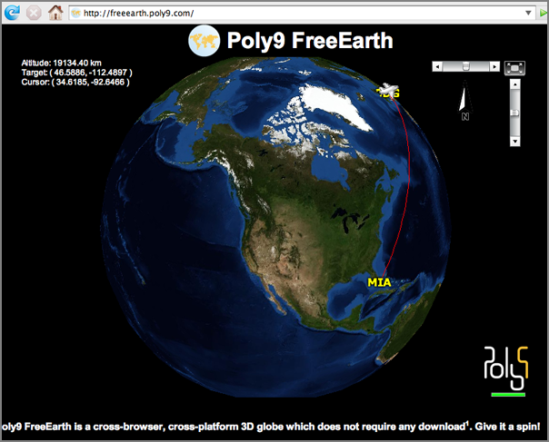
OceanDIVA interface
12.13.2007 09:27
Presenting at AGU today
I am presenting this afternoon:
10:50 UPDATE: Poster is hung on the wall and ready to go
1340h IN43A-0906 POSTER Google Earth Visualizations of the Marine Automatic Identification System (AIS): Monitoring Ship Traffic in National Marine Sanctuaries.I am right next to a presenation on the USCG Icebreaker Healy's onboard datasystems. Should be a good session.
10:50 UPDATE: Poster is hung on the wall and ready to go
12.12.2007 08:42
User types
The
5 users you meet in hell (and one you'll find in heaven)
... The Dream User To be sure, not all user archetypes are negative or troublesome. Today, help desk pros increasingly view their job as one of teaching, giving users confidence to solve their own problems, to experiment, and to try new things. . They don't simply fix a problem and walk away; they're giving users the knowledge to improve their productivity. Of course, the user has to be open and willing to embrace this teaching, which brings us to the Dream User. . You might think IT help desk pros would define their Dream User as the one they never hear from. But you'd be wrong. While our IT help desk experts may have slightly differing opinions on the more negative user archetypes they see, all were in agreement about the user of their dreams. . "If I never hear from someone, that probably means they're fighting through something that's ruining their productivity," says Olson. By contrast, one of his more experienced remote users called him after encountering an error message while replacing a video card. "She wanted to know why that happened. Her desire for knowledge really tickled me." ...x
12.11.2007 13:56
Boston gets Google Maps StreetView
SF has had this for quite sometime. Now Boston joins the club.
http://google-latlong.blogspot.com/2007/12/enjoy-holidays-with-new-street-view.html - Google Lat Lon Blog
http://google-latlong.blogspot.com/2007/12/enjoy-holidays-with-new-street-view.html - Google Lat Lon Blog
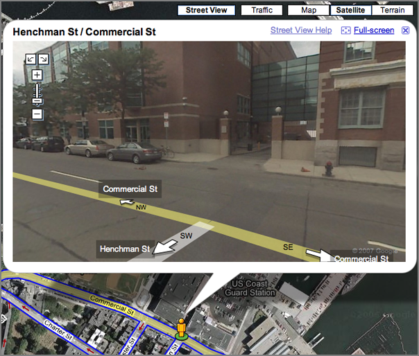
12.11.2007 11:54
AGU 2007 - First day
AGU has begun. Here is a picture from the Margins gathering in the evening.
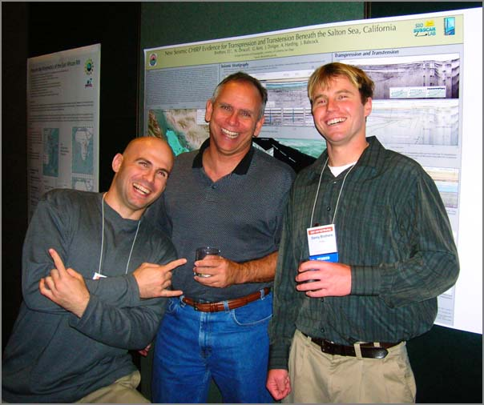
12.10.2007 12:42
Complex Event Processing
Gordon mentioned a little about Complex Event Processing (CEP) yesterday and wow.
RTI Unleashes the Power of Complex Event Processing to Speed Deployment of Low-Latency, High-Throughput Applications. RTI uses the Corel8 engine.
Complex Event Processing [wikipedia] is not that helpful.
More CEP - Complex Event Processing [chrisdonnan.com] has a quick example of CEP.
I need to dig into the topic much more.
RTI Unleashes the Power of Complex Event Processing to Speed Deployment of Low-Latency, High-Throughput Applications. RTI uses the Corel8 engine.
Complex Event Processing [wikipedia] is not that helpful.
More CEP - Complex Event Processing [chrisdonnan.com] has a quick example of CEP.
I need to dig into the topic much more.
12.10.2007 10:14
GCN on AIS Vis Tools
I know nothing about this until I read this. Thanks to Andy A. for
pointing me to the article.
New tools aid Coast Guard in port tracking [gcn.com]
New tools aid Coast Guard in port tracking [gcn.com]
New visualization tools are helping the Coast Guard develop situational awareness at the Port of Miami, but more assistance is needed to track small boats and noncooperative vessels, according to congressional testimony given this week. . The Homeland Security Department's Directorate of Science and Technology is funding the Visualization Tools for Situational Awareness and Emergency Response program, also known as Viz Tools. . The project is a proof-of-concept demonstration to correlate sensors and automated vessel-tracking information with advanced notification-of-arrival information and other port activity, Commander Karl Schultz, who heads the Coast Guard's Miami sector, testified at a field hearing Nov. 26 of the House Homeland Security Subcommittee on Border, Maritime and Global Counterterrorism. The hearing was held in Miami. . The visualization tool program - along with Project Hawkeye, which is a sensor network surveillance project for Miami and other ports - is serving as a test bed for Command 21, the Coast Guard's next large upgrade of its command centers. . Although the program is resulting in improved maritime domain awareness, there are still gaps. For example, the Coast Guard needs better information on the 170,000 registered small craft in Miami, Dade and Broward counties, Schultz said. . "The small boat threat ... continues to present technology and policy challenges and remains a primary maritime security concern," Schultz said. "Within [DHS], we are working closely with Customs and Border Protection to expand our efforts to secure the small maritime craft environment." . In addition, Schultz said the Coast Guard still has a long way to go to managing all the information needed for daily operations and decision-making. This includes coordination of programs for tracking large vessels, such as the National Automatic Identification System, Advanced Notice of Arrival process, and the forthcoming International Maritime Organization's Long Range Identification and Tracking system. . Stephen Dryden, chief executive officer of the Mariner Group LLC, of Columbia, S.C., which is providing its CommandBridge software solution to address the need for situational awareness in the Viz Tools project, also testified at the hearing. . He said the objectives of Viz Tools are to develop and maintain situational awareness, identify threats rapidly, maximize assets and operational capacity to respond to the threat, and plan and manage the emergency response. Before Viz Tools, those standing watch had to achieve situation awareness by monitoring radars, harbor pilot Web sites, incoming messages, commercial media, weather and Coast Guard systems, he said. . Altough the visualization project is working successfully, Dryden agreed with Schultz that small vessels are a vulnerability. The ports need better sensor technology to track small boats and identify noncooperative vessels whose transponders for tracking through the Automatic Identification System are turned off. In some cases, however, the transponders are turned off accidentally. . With today's technology, ports fall short in their ability to track noncooperative vessels and small boats, Dryden said. Programs in development, such as the Coast Guard's Automated Scene Understanding project, may help mitigate those problems, he said. . Dryden also recommended additional aids to further improve situational awareness, including the integration of cargo and vessel information into Viz Tools, more coordination with local law enforcement agencies and improved long-range tracking of vessels.http://homeland.house.gov/SiteDocuments/20071126140233-01247.pdf MDA and Vessel Tracking presentation to Congress.
... My company, The Mariner Group, has been working with the US Coast Guard over the past three years to significantly improve MDA and response throughout the nation. My goals today are to inform you of the overall project mission, the challenges encountered in gaining true MDA, and lastly, to urge support for full funding of the Safe Port Act of 2006. ...Anybody have better links about this?
12.10.2007 07:41
EVDO in SF
Riding on the train into SF, I discovered that here EVDO works great
while in motion and even works in the train tunnels in South SF. Wow.
12.10.2007 07:00
GPS on a train plus EVDO internet
I'm on a train to AGU with my i.Trek GPS running in my pocket and
logging data to my serial logger.
serial_logger.py -p /dev/tty.iBT-GPS-SPPslave-1 -v --uscg -skurt_itrekThe feed looks like this in verbose mode:
$GPGGA,150312.000,3731.6458,N,12217.0280,W,1,9,1.02,10.1,M,-25.6,M,,*58,rkurt_itrek,1197298992.73 $GPGSA,A,3,11,28,25,27,26,15,17,19,08,,,,1.31,1.02,0.83*07,rkurt_itrek,1197298992.74 $GPGSV,3,1,11,28,73,318,23,08,68,062,30,27,49,102,28,35,41,210,*7E,rkurt_itrek,1197298992.74 $GPGSV,3,2,11,17,40,184,27,26,33,313,16,25,30,112,25,15,21,316,18*7B,rkurt_itrek,1197298992.76 $GPGSV,3,3,11,11,20,097,26,19,11,039,31,13,05,159,*4B,rkurt_itrek,1197298992.76 $GPRMC,150312.000,A,3731.6458,N,12217.0280,W,46.44,312.00,101207,,,A*4B,rkurt_itrek,1197298992.77 $GPGGA,150313.000,3731.6539,N,12217.0405,W,1,9,1.02,9.8,M,-25.6,M,,*65,rkurt_itrek,1197298993.78Time to do something with the data!
gpsbabel -i nmea -f tmp.log -o gpx -F tmp.gpxThat will output an xml version of the NMEA.
<?xml version="1.0" encoding="UTF-8"?> <gpx version="1.0" creator="GPSBabel - http://www.gpsbabel.org" xmlns:xsi="http://www.w3.org/2001/XMLSchema-instance" xmlns="http://www.topografix.com/GPX/1/0" xsi:schemaLocation="http://www.topografix.com/GPX/1/0 http://www.topografix.com/GPX/1/0/gpx.xsd"> <time>2007-12-10T15:06:17Z</time> <bounds minlat="37.527430000" minlon="-122.284008333" maxlat="37.527565000" maxlon="-122.283800000"/> <trk> <trkseg> <trkpt lat="37.527430000" lon="-122.283800000"> <ele>10.100000</ele> <time>2007-12-10T15:03:12Z</time> <course>312.000000</course> <speed>23.890800</speed> <fix>3d</fix> <sat>9</sat> <hdop>1.020000</hdop> <vdop>0.830000</vdop> <pdop>1.310000</pdop> </trkpt> <trkpt lat="37.527565000" lon="-122.284008333"> <ele>9.800000</ele> <time>2007-12-10T15:03:13Z</time> <fix>3d</fix> <sat>9</sat> <hdop>1.020000</hdop> </trkpt> </trkseg> </trk> </gpx>A little easer to read is csv:
%gpsbabel -i nmea -f tmp.log -o csv -F tmp.csv %cat tmp.csv 37.52743, -122.28380, 37.52756, -122.28401,How about some google earth kml?
% gpsbabel -i nmea -f tmp.log -o kml -F tmp.kmlThat outputs a static kml of the positions:
...
<Placemark>
<name>Path</name>
<styleUrl>#lineStyle</styleUrl>
<LineString>
<tessellate>1</tessellate>
<coordinates>
-122.283800,37.527430,10.100000
-122.284008,37.527565,9.800000
</coordinates>
</LineString>
</Placemark>
...
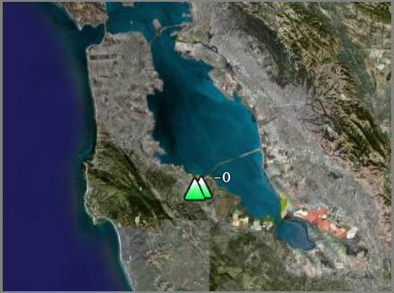
12.08.2007 13:41
USCG Oil Spill AIS investigation
I think I found the original source to the article I found a week or two ago...
MULTIPLE AGENCIES CONTINUE BEACH CLEANUP AFTER OIL SPILL
MULTIPLE AGENCIES CONTINUE BEACH CLEANUP AFTER OIL SPILL
NEW YORK-Cleanup crews estimate a total of 500 gallons washed up on a two and-a-half mile section of Long Beach near Jones Beach, N.Y., as multiple agencies began cleanup operations at 7 a.m. today.
More than 70 people from multiple agencies including the Coast Guard, New York Department of Environmental Conservation, (DEC) and the Miller Environmental Group are working together on Atlantic Beach near Genesee Blvd. and Ocean Pkwy. to cleanup an oil spill reported yesterday by local surfers at 11 a.m.
Coast Guard Sector New York and Coast Guard Sector Long Island Sound are gathering oil samples from all vessels transiting to and from the port of New York and New Jersey within the estimated time frame to match the source of the pollution.
Using the automatic identification system, (AIS) a system similar to a short range GPS that works over a radio frequency, the Coast Guard will attempt to track down the various vessels in the area of the Ambrose Anchorage during the spill.
"The AIS can tell us where the vessels were, at what time, what speed they were making and what course they were on," said Jason Dailey, Vessel Traffic Services watch supervisor.
Self-propelled vessels over 65-feet are required by law to have an AIS installed on their vessel, which keeps a log of AIS and radar contacts.
"Were here with the local response agencies to minimize the impact to the environment and get this oil cleaned up," said Lt. William Grossman, the incident commander for the oil spill.
Police Departments from Nassau County, and Atlantic Beach, as well as representatives from the Village of Atlantic Beach, City of Long Beach and the Town of Hempstead have offered assistance in the cleanup.
The Coast Guard continues to investigate the incident.
12.07.2007 08:59
Manchester NH airport now has free WiFi
Manchester now has free WiFi (joining the ranks of Las Vegas). Woo hoo!
It looks like the same may go for Boston, but it is hard to tell.
12.05.2007 17:39
Scheduling XML format?
Hmm... I need a scheduling language that I can embed in AIS message
definitions. I would prefer something XML and as standard as
possible. It needs to be able to express things like "send this every
3 minutes", "if condition x, send now", "if speed >= 10 and speed <
20, send every 5 seconds".
So far, my 10 minute search, my have run across RFC 2245 (iCalendar), RFC 2446 IcaL Transport (iTIP), Calendaring and Scheduling with XML-RDF (orlando), SMIL Time, iCalendar in XML Format (xCal-Basic), and ? iCalendar and xCal are interesting, but I am not specifying actual events with respect to an actual date, so maybe they just are not appropriate. Maybe xCal could be used to schedule an AIS basestation for broadcasting some information. And then there is the microformat world with hcalendar.
Suggestions/thoughts?
So far, my 10 minute search, my have run across RFC 2245 (iCalendar), RFC 2446 IcaL Transport (iTIP), Calendaring and Scheduling with XML-RDF (orlando), SMIL Time, iCalendar in XML Format (xCal-Basic), and ? iCalendar and xCal are interesting, but I am not specifying actual events with respect to an actual date, so maybe they just are not appropriate. Maybe xCal could be used to schedule an AIS basestation for broadcasting some information. And then there is the microformat world with hcalendar.
Suggestions/thoughts?
12.04.2007 23:08
i.Trek Z1 bluetooth GPS works with my Mac
I got my new GPS today. I was a little worried about getting it
working, but it turned out to be very easy. I didn't even need to
setup a bluetooth library. I was thinking that I needed to write some
python to talk to the device with something like lightblue
I put in the battery and hooked the GPS up to a USB port on my laptop. I set the switch to navigation mode and hen went looking for the manual. Here are the instructions it somes with:
Press Passkey Options.
Set to "Use a specific passkey". enter 0000
And then I was good to go. A device appeared in /dev!
I put in the battery and hooked the GPS up to a USB port on my laptop. I set the switch to navigation mode and hen went looking for the manual. Here are the instructions it somes with:
- Go to System Preferences and click on the Bluetooth icon.
- Click on settings to ensure BT is turned on and discoverable.
- Select the Devices tab.
- Click on set up new device.
- This brings up the Bluetooth Set Up Assistant.
- Follow the instructions on the set up assistant and enter 0000 as passkey.
- The device should be listed in the devices window.
- Locate the BT serial utility application in the utilities folder, double click to open.
- Click on new.
- Assign the port a name, select outgoing, click on select device.
- Select the iBT-GPS and highlight SPP slave in the right hand window.
- Click select button and select the port type RS-232.
- Click OK to finish setup.
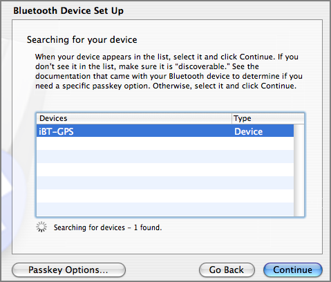
Press Passkey Options.
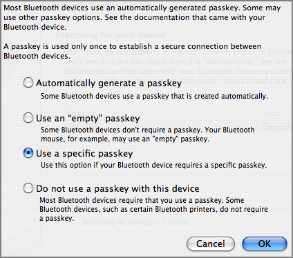
Set to "Use a specific passkey". enter 0000
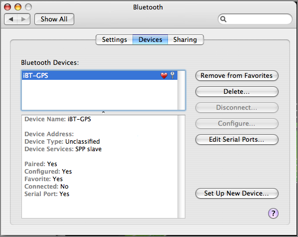
And then I was good to go. A device appeared in /dev!
ls -l /dev/tty.iBT-GPS-SPPslave-1 crw-rw-rw- 1 root wheel 10, 48 Dec 4 22:51 /dev/tty.iBT-GPS-SPPslave-1I then used my serial logging program to pull NMEA strings from the GPS
serial_logger.py -p /dev/tty.iBT-GPS-SPPslave-1 -v opening logfile: log.2007-12-05 $GPGGA,133428.811,4308.0723,N,07056.3810,W,1,5,1.46,24.9,M,-32.9,M,,*52 $GPGSA,A,3,25,08,27,13,16,,,,,,,,1.72,1.46,0.92*01 $GPGSV,3,1,10,19,75,162,,25,67,297,37,03,62,062,,27,47,308,38*7E $GPGSV,3,2,10,13,39,235,39,16,23,077,23,08,20,311,35,23,19,200,*7C $GPGSV,3,3,10,11,05,181,,21,01,027,*72 $GPRMC,133428.811,A,4308.0723,N,07056.3810,W,0.15,0.00,051207,,,A*79 $GPGGA,133429.793,4308.0846,N,07056.3870,W,1,5,1.46,25.6,M,-32.9,M,,*52 $GPGSA,A,3,25,08,27,13,16,,,,,,,,1.73,1.46,0.92*00 $GPGSV,3,1,10,19,75,162,,25,67,297,37,03,62,062,,27,47,308,38*7E $GPGSV,3,2,10,13,39,235,39,16,23,077,21,08,20,311,35,23,19,200,*7E $GPGSV,3,3,10,11,05,181,,21,01,027,*72 $GPRMC,133429.793,A,4308.0846,N,07056.3870,W,0.04,0.00,051207,,,A*77 ...
12.04.2007 17:09
NASA has a new home page
I am not a fan of the new look... at least it doesn't start playing
its favorite song when I visit.
NASA Site Seeks to Draw the MySpace Crowd
The old look [archive.org]
Thanks to Judy for pointing me to this change.
And just today, I saw this Congressional Report: U.S. Civilian Space Policy Priorities: Reflections 50 Years After Sputnik
NASA Site Seeks to Draw the MySpace Crowd
The old look [archive.org]
Thanks to Judy for pointing me to this change.
And just today, I saw this Congressional Report: U.S. Civilian Space Policy Priorities: Reflections 50 Years After Sputnik
The "space age" began on October 4, 1957, when the Soviet Union (USSR) launched Sputnik, the world's first artificial satellite. Some U.S. policymakers, concerned about the USSR's ability to launch a satellite, thought Sputnik might be an indication that the United States was trailing behind the USSR in science and technology. The Cold War also led some U.S. policymakers to perceive the Sputnik launch as a possible precursor to nuclear attack. ... If they consider scientific knowledge the highest priority, unmanned missions and other science-related activities may be Congress' major goal for NASA. If international relations are a high priority, Congress might encourage other nations to become equal partners in NASA's activities. If spinoff effects, such as the creation of new jobs and markets and its effect on STEM education are Congress' priorities, then technological development, linking to the needs of business and industry, and education may become NASA's primary goals.Emphasis is mine.
12.04.2007 17:02
DataTurbine - another middleware package
Yet another middleware package. DataTurbine. There is a svn
link, but it takes a user/password, I don't see any point releases,
and the wiki says access denied. I guess "RBNB" == Data Turbine? Am
a little confused by their pages. I think I found a Source.zip, but
this project needs some work before I would be comfortable counting on
it and if this is purely Java, then it is definitely not something I
would look at. Having Java support is a good thing, but can't be the
only option. And what license? I had to dig into the zip (which did
not unpack in a "normal" manner) and found Apache License. That is
good news.
NSF's vision of large-scale sensor-based Observing Systems, to address the National Research Council's "Grand Challenges" for environmental science, relies on robust cyberinfrastructure. Streaming data middleware is an essential component of this cyberinfrastructure, providing the foundation for reliable data acquisition and instrument management services. The environmental science and engineering communities are currently engaged in the early planning and development phases of the next generation of large-scale sensor-based observing systems. The Open Source DataTurbine Initiative is a new NSF-funded project to empower these communities with Streaming Data Middleware. ...
12.04.2007 16:50
noaadata 0.31 - starting on AIS Class B
NOTE: If you have a pair class B msg 19 NMEA strings and the correctly
decoded values, I could really use them. I grabbed a random message
and I am getting junk for the name field and values that don't make sense
for the dimensions.
noaadata-0.31 is out an available for download: downloads
UPDATE: I now have a copy of ITU-T M.1371-3. Now I just need to check it against my message specification xml files!
I know it is out of date, but I don't have a copy of the -2 spec or the draft -3. If anybody wants to donate a spec, please email me.
noaadata-0.31 is out an available for download: downloads
- Added Class B 18 & 19 position report messages. 19 does not work yet
- Improved the msg 21 documentation
- Some cleanup of msg 5
- Added whalenotice3
- New scaps: ais_pg_{dailyvessels,monthhistogram,speedsummary}.py
- ais_pg_transitsummary has new --mmsi option to only check one vessel
UPDATE: I now have a copy of ITU-T M.1371-3. Now I just need to check it against my message specification xml files!
I know it is out of date, but I don't have a copy of the -2 spec or the draft -3. If anybody wants to donate a spec, please email me.
12.04.2007 11:12
Virtual Alabama - Google Enterprise Solution
This might have to be the worst front door web page I have seen this
year. But the idea behind it is what matters. I do not want to
see spinning interface buttons when it comes to disaster response.
http://www.virtu-al.org/ - Virtual Alabama
Virtual Alabama [Google]
Governor Riley Unveils "Virtual Alabama" to Enhance Emergency Response and Disaster Preparedness
I found this from Govenor of Alabama Unveils Google Earth Application [Google Earth Blog]
http://www.virtu-al.org/ - Virtual Alabama
Virtual Alabama [Google]
Governor Riley Unveils "Virtual Alabama" to Enhance Emergency Response and Disaster Preparedness
I found this from Govenor of Alabama Unveils Google Earth Application [Google Earth Blog]
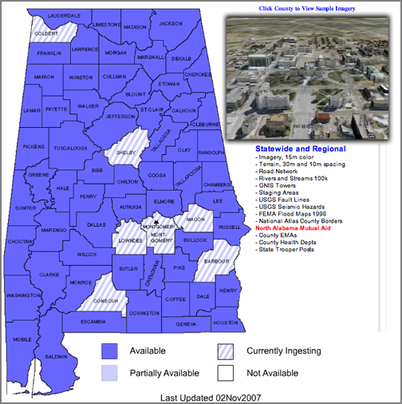
12.04.2007 10:31
Getting page count from a PDF
I found two ways to quickly get the page count from a PDF. Method 1: xpdf [foolabs]
% fink install xpdf % pdfinfo Document.pdf Title: Subject: Author: Creator: Hewlett Packard MFP Producer: CreationDate: Tagged: no Pages: 2 Encrypted: no Page size: 612 x 792 pts (letter) File size: 1152903 bytes Optimized: no PDF version: 1.4Method 2: pdftk [accesspdf]
% fink install pdftk % pdftk Document.pdf dump_data output report.txt % cat report.txt InfoKey: Creator InfoValue: Hewlett Packard MFP NumberOfPages: 2Method 1 would be my choice.
12.04.2007 08:42
noaadata AIS questions with answers
I got a email with some questions about noaadata-py and AIS in
general. Here are the questions with my attempts at answers.
Here is an example of decoding the above message:
IALA has some documentation on the web, but I have not seen any that cover msg 5. "A-124 on AIS Shore Stations and Networking Aspects Related to the AIS Service" has (in Table 15.1) a list of AIS Message numbers and short descriptions.
Also, the UN ECE has documentation on the River Information Services (RIS) that includes some documentation on AIS messages 1-3, and 5: ECE-TRANS-SC3-176e.doc.
You can always look at the HTML derived from my XML definition of message 5, but be careful that I might not have it complete correct. ais_msg_5.html
I have a program in scripts called "ais_normalize". This code assumes that the ais messages are in the USCG N-AIS format. I did that, so that it can cope with NMEA messages interspersed from multiple receive stations (which is mostly what I deal with). I do not consider multiline NMEA strings in most of my software. I first convert the multiline NMEA to what I call the "normal" form. Note that this form violates the line length limits of the NMEA specifications.
I did a quick hack to the above NMEA strings to make ais_normalize happy. I used a timestamp from this morning and gave it a receive station of 'UNKNOWN'.
1. I received some message of type "18" like this sentence : !AIVDM,1,1,,A,BCHOFF00F7v03HVh;0DkgwRUoP06,0*58 Do you know this kind of message ? I didn't seems to be standard in Class A ?In noaadata, you can use binary.py to find out what message number that is. The above question already figured out that this is message 18, but just to go back through the process:
% cd ais
% ipython
In [1]: import binary
In [2]: binary.ais6chartobitvec('B')
Out[2]:
In [3]: print binary.ais6chartobitvec('B')
010010
In [4]: print int(binary.ais6chartobitvec('B'))
18
18 is a Class B position report. I have added this message to
noaadata-py and it will be out in the next release. ais_msg_18.html
Here is an example of decoding the above message:
./ais_msg_18.py -T html -d '!AIVDM,1,1,,A,BCHOFF00F7v03HVh;0DkgwRUoP06,0*58' > 18.html open 18.html
| Field Name | Type | Value | Value in Lookup Table | Units |
|---|---|---|---|---|
| MessageID | uint | 18 | 18 | |
| RepeatIndicator | uint | 1 | Missing LUT entry | |
| UserID | uint | 227006040 | 227006040 | |
| Reserved1 | uint | 0 | 0 | |
| SOG | udecimal | 8.8 | Missing LUT entry | knots |
| PositionAccuracy | uint | 0 | low (greater than 10 m) | |
| longitude | decimal | -1.746905 | -1.746905 | degrees |
| latitude | decimal | 47.20470166666666666666666667 | 47.20470166666666666666666667 | degrees |
| COG | udecimal | 82.7 | 82.7 | degrees |
| TrueHeading | uint | 511 | 511 | degrees |
| TimeStamp | uint | 5 | Missing LUT entry | seconds |
| RegionalReserved | uint | 0 | 0 | |
| Spare | uint | 0 | 0 | |
| RAIM | bool | True | in use | |
| CommStateSelector | uint | 1 | ITDMA | |
| CommState | uint | 393222 | 393222 |
2. Documentation about AIS. I didn't found on the web a document with the table of the list type for the ShipandCargo field. (message 5) . do you have an URL or pdf to recommend me to understand deeper all the particularities of AIS messages?The ITU 1371-[123] specification documents are only available if you pay. M.1371 : Technical characteristics for an automatic identification system using time division multiple access in the VHF maritime mobile band.
IALA has some documentation on the web, but I have not seen any that cover msg 5. "A-124 on AIS Shore Stations and Networking Aspects Related to the AIS Service" has (in Table 15.1) a list of AIS Message numbers and short descriptions.
Also, the UN ECE has documentation on the River Information Services (RIS) that includes some documentation on AIS messages 1-3, and 5: ECE-TRANS-SC3-176e.doc.
You can always look at the HTML derived from my XML definition of message 5, but be careful that I might not have it complete correct. ais_msg_5.html
3.Composite sentence Here we received some "composite" sentence like : !AIVDM,2,1,3,A,5CIUmQ02<qvPI4<J221<4mDDj0@F0<P4m0h4Tr1S000006n90?4hBCU8,0*69 !AIVDM,2,2,3,A,3PFPBDQH8888880,2*4D With a small Ruby script, I recompose to one sentence before to sent to your ais_build_postgis function. But may be I miss something that already exist in the "noaadata-py-0.23" project ?First thing is to make sure that you are using the latest release. As of right now, the software is at version 0.30 and I expect to have 0.31 out later this week.
I have a program in scripts called "ais_normalize". This code assumes that the ais messages are in the USCG N-AIS format. I did that, so that it can cope with NMEA messages interspersed from multiple receive stations (which is mostly what I deal with). I do not consider multiline NMEA strings in most of my software. I first convert the multiline NMEA to what I call the "normal" form. Note that this form violates the line length limits of the NMEA specifications.
I did a quick hack to the above NMEA strings to make ais_normalize happy. I used a timestamp from this morning and gave it a receive station of 'UNKNOWN'.
!AIVDM,2,1,3,A,5CIUmQ02<qvPI4<J221<4mDDj0@F0<P4m0h4Tr1S000006n90?4hBCU8,0*69,rUNKNOWN,1196778635 !AIVDM,2,2,3,A,3PFPBDQH8888880,2*4D,rUNKNOWN,1196778635Now to normalize the message and
ais_normalize.py log.ais !AIVDM,1,1,3,A,5CIUmQ02<qvPI4<J221<4mDDj0@F0<P4m0h4Tr1S000006n90?4hBCU83PFPBDQH8888880,2*25,rUNKNOWN,1196778635 ais_normalize.py log.ais > log.ais.norm cat log.ais.norm | ./ais_msg_5.py -d -T html > 5.html open 5.html
| Field Name | Type | Value | Value in Lookup Table | Units |
|---|---|---|---|---|
| MessageID | uint | 5 | 5 | |
| RepeatIndicator | uint | 1 | Missing LUT entry | |
| UserID | uint | 228160900 | 228160900 | |
| AISversion | uint | 0 | 0 | |
| IMOnumber | uint | 9234408 | 9234408 | |
| callsign | aisstr6 | FQCF | FQCF | |
| name | aisstr6 | SAMUEL DE CHAMPLAIN | SAMUEL DE CHAMPLAIN | |
| shipandcargo | uint | 99 | other type, No additional information | |
| dimA | uint | 0 | 0 | m |
| dimB | uint | 0 | 0 | m |
| dimC | uint | 0 | Missing LUT entry | m |
| dimD | uint | 0 | Missing LUT entry | m |
| fixtype | uint | 1 | GPS | |
| ETAminute | uint | 45 | 45 | |
| ETAhour | uint | 17 | 17 | |
| ETAday | uint | 4 | 4 | |
| ETAmonth | uint | 0 | 0 | |
| draught | udecimal | 6 | Missing LUT entry | m |
| destination | aisstr6 | SAINT NAZAIRE | SAINT NAZAIRE | |
| dte | uint | 0 | available | |
| Spare | uint | 0 | 0 |
12.04.2007 08:35
IEC 62320-2 Ed. 1.0
IEC 62320-2 Ed. 1.0
Maritime navigation and radiocommunication equipment and systems - Automatic identification system (AIS) - Part 2: AIS AtoN Stations - Operational and performance requirements, methods of testing and required test results. . This Final Draft International Standard has the following voting period: 2007-11-30 to 2008-02-01
12.03.2007 13:27
hCard micro format
For a quick break, I decided to play with the hCard micro format,
which is a supplement to vCard. There is a quick online generator for
hCards: hCard
Creator. Here is my hCard: kurt-schwehr-hcard.html
 Kurt Schwehr
Kurt Schwehr
Trackback: Sean Gillies - Geo Microformat [import cartography] http://microformats.org/wiki/geo.
<div id="hcard-Kurt-Schwehr" class="vcard"> <img style="float:left; margin-right:4px" src="http://schwehr.org/kurt/kurt-thumb.png" alt="photo" class="photo"/> <a class="url fn" href="http://schwehr.org">Kurt Schwehr</a> <div class="org">Center for Coastal and Ocean Mapping</div> <a class="email" href="mailto:kurt _at_ ccom.unh.edu">kurt _at_ ccom.unh.edu</a> <div class="adr"> <div class="street-address">24 Colovos Rd.</div> <span class="locality">Durham</span> , <span class="region">NH</span> , <span class="postal-code">03820</span> <span class="country-name">USA</span> </div> <div class="tel">603-862-1159</div> </div>The above hcard looks like this:
Kurt Schwehr
Center for Coastal and Ocean Mapping
kurt _at_ ccom.unh.edu
24 Colovos Rd.
Durham
,
NH
,
03820
USA
603-862-1159
Trackback: Sean Gillies - Geo Microformat [import cartography] http://microformats.org/wiki/geo.
12.03.2007 11:37
Is this cheating when it comes to home snow removal?
Is this cheating or am I just jealous? I think it is the latter. One
of my neighbors uses his front-end loader to clear his drive.
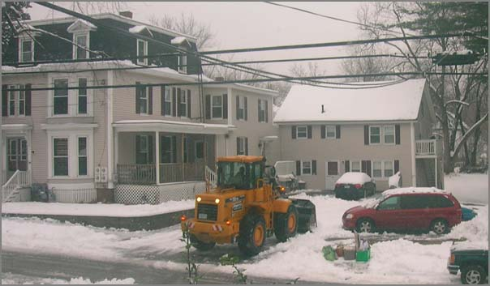
12.01.2007 18:17
hello world in C# with mono on a mac
Here is a quick C# hello world that I did. First I need to get mono
(the cross platform .Net equivalent).
fink install monoNow write out a hello world source file:
cat << EOF > hello.cs
using System;
namespace Kurt.Mono.Examples
{
public class HelloWorld
{
public static void Main(string[] args)
{
Console.WriteLine("Hello World");
}
}
}
Now compile it and see what we got.
% mcs hello.cs % ls -l hello* -rw-r--r-- 1 schwehr schwehr 189 Dec 1 18:16 hello.cs -rwxr-xr-x 1 schwehr schwehr 3072 Dec 1 18:16 hello.exe % file hello.exe hello.exe: MS Windows PE 32-bit Intel 80386 console executableNow run it.
% mono hello.exe Hello WorldMore is available here... Introduction to Mono - Your first Mono app [codeproject.com]
12.01.2007 17:13
quick ships per day calculations from SQL
I think I finally have a basic program to calculate vessels per day
using python and SQL that runs fast and is not too complicated. This
one can summarize the vessels per day for one year with 4.5M records
in about 3-4 seconds. Here is an example of the test SQL code for one
day:
SELECT distinct(userid) \
FROM position \
WHERE cg_timestamp BETWEEN \
DATE('2006-01-02') and DATE('2006-01-03');
userid
===========
303388000
316012950
366897920
367075760
477930000
This is equivalent to the less friendly query I had the other day:
SELECT distinct(userid) \ FROM position \ WHERE cg_timestamp >= '2006-01-02 00:00:00' AND cg_timestamp <= '2006-01-03 00:00:01';And here is the core part of the resulting python using psycopg2. The trick is to use timedelta to jump one day at a time through the days of the year.
userid =========== 303388000 316012950 366897920 367075760 477930000
# make postgres db connection and get a cursor called "cu"
import datetime
dt = datetime.datetime(2006,1,1)
dtend = datetime.datetime(2007,1,1)
doy = 1 # day of the year
oneDay = datetime.timedelta(1)
while dt < dtend:
dateStr1 = ('%d-%02d-%02d' % (dt.year, dt.month, dt.day))
dtnext = dt + oneDay
dateStr2 = ('%d-%02d-%02d' % (dtnext.year, dtnext.month, dtnext.day))
q = "SELECT count(distinct(userid)) FROM position"\
" WHERE cg_timestamp >= '"+dateStr1+"' AND cg_timestamp <= '"+dateStr2+"';"
cu.execute(q)
numVessels = cu.fetchone()[0]
print doy, numVessels, dateStr1
dt = dtnext
doy += 1
This will become part of noaadata as ais_pg_dailvessels.py. I will hopefully
let the default range over all of the database, but allow the user to constrain
either the end date and/or the beginning date.